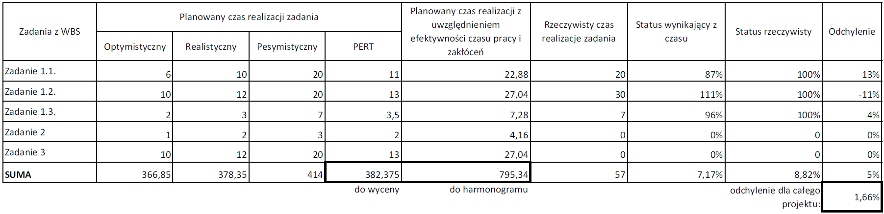
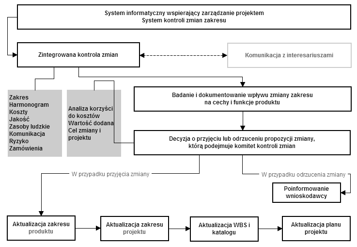
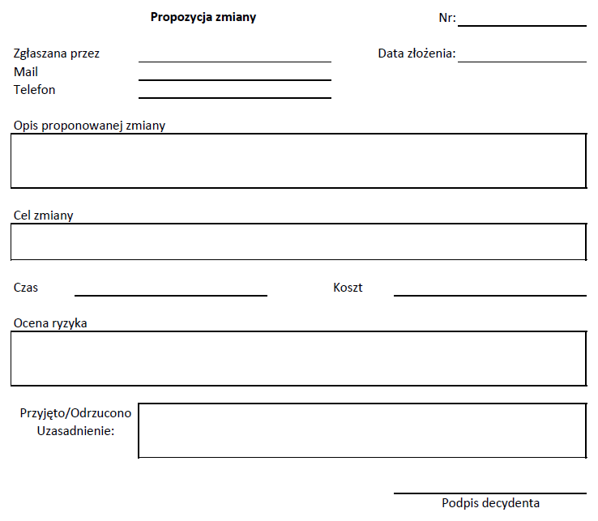

W ramach tego etapu koordynator monitoruje i kontroluje prace nad projektem i w przypadku odchyleń podejmuje odpowiednie działania. Szczególnej uwadze podlegają koszty i harmonogram projektu. Następuje również weryfikacja zakresu projektu, a w przypadku zmian stosowane są odpowiednie procedury. Działania kontrolne obejmują również kwestie jakości. W ramach tego etapu kierownik wraz z zespołem monitorują różnego rodzaju ryzyka i w razie potrzeby odpowiednio na nie reagują. Poszczególne charakterystyki projektu są raportowane. Kontroli i raportwaniu podlegają nie tylko członkowie projektu, ale również podwykonawcy. Rolą kierownika jest stałe administrowanie zamówieniami.
Aby zrozumieć, jakie działania podejmuje koordynator na etapie kontroli i monitorowania projektu, kluczowe jest zrozumienie różnicy pomiędzy tymi procesami. Kontrola opiera się przede wszystkim na porównaniu stanu obecnego z planem oraz podjęciu działań minimalizujących ewentualne odchylenia. Monitorowanie projektu jest to rejestrowanie postępów prac, analiza tempa i kierunku, w którym zmierza projekt. Pojęciem zbliżonym do kontroli i monitorowania jest pojęcie ewaluacji. Ewaluacja jest to próba spojrzenia na projekt i sposób zarządzania nim w szerszej perspektywie. W ramach działań ewaluacyjnych można wskazać identyfikację i ocenę celów projektu, sposobów ich realizacji czy efektów. Tak sformułowane definicje sugerują, że projekt może być monitorowany, ale niekoniecznie kontrolowany. Projekt, który jest dobrze kontrolowany, wymaga monitorowania. Ewaluacja jest działaniem w miarę niezależnym od kontroli i monitorowania, aczkolwiek dobra kontrola i monitorowanie ułatwiają precyzyjną i trafną ewaluację projektu.
Ze względu na to, że podczas projektowania i programowania aplikacji internetowych głównym kosztem jest czas, bardzo ważne jest, aby precyzyjnie monitorować czas poświęcony na realizację poszczególnych zadań. Można tutaj skorzystać z narzędzi, które automatyzują monitoring czasu pracy, jak na przykład Toggl (http://toggl.com). Należy jednak pamiętać, że narzędzia tego typu pozwalają jedynie zweryfikować jaki czas został już poświęcony na realizację zadania, ale nie są wiarygodnym źródłem informacji o statusie postępu prac. Można założyć, że jeśli na zadanie zostało przeznaczonych dwadzieścia godzin, a z rejestracji czasu pracy wynika, że na jego realizację poświęconych zostało dziesięć godzin, to zadanie wykonane jest w pięćdziesięciu procentach. W branży informatycznej, gdzie realziacja zadania bardzo często powiązana jest z nietypowymi problemami czy nawet niepewnością, jak należy coś wykonać, byłoby zbyt dużym uproszczeniem i w rezultacie mogłoby doprowadzić do znaczących rozbieżności między tym, co jest w raporcie postępoów prac a rzeczywistością. Status postępu prac najlepiej weryfikować z wykonawcą zadania na przykład podczas tygodniowych spotkań zespołu.
W celu dokumentacji czasu poświęconego na zadania i statusu realizacji projektu można skorzystać z odpowiedniego oprogramowania wspierającego zarządzanie projektami. Można również skorzystać z prostego arkusza kalkulacyjnego, którego przykład przedstawiony został w tabeli 2.3. Jako że rezerwa kierownicza dla tego przykładowego projektu została ustalona na 15% całkowitego planowanego czasu realizacji zadań istotne dla kierownika projektu jest, aby komórka reprezentująca odchylenie statusu prac dla całego projektu nie krzekroczyła tej wartości, ponieważ to będzie oznaczało przekroczenie harmonogramu i w konsekwencji również budżetu.
Rys. 2.5.1 Rozliczenia czasu pracy nad projektem
Bardzo ważnym elementem etapu kontroli i monitorowania projektu jest odpowiednie zarządzanie zmianą w szczególności często występującą zmianą zakresu projektu do czego służy wspomniany wcześniej w pracy formalny system kontroli zmian. System ten powinien uniemożliwiać wprowadzanie nieuzasadnionych zmian lub zmian, które mogą mieć negatywny wpływ na projekt. Powinien również umożliwiać i wskazywać drogę realizacji zmian, które są uzasadnione. Stąd potrzeba oceny wpływu proponowanej zmiany na projekt oraz formalne procedury w przypadku odrzucenia lub przyjęcia zmiany. W ramach oceny wpływu proponowanej zmiany zakresu należy uwzględnić zmianę produktu końcowego, ale również wynikające z niej zmiany harmonogramu, kosztu, jakości czy ryzyka. System kontroli zmiany powinien wskazać interesariuszom projektu jak zgłaszać propozycję zmiany i jak dalej przebiega procedura jej weryfikacji i ewentualnego wdrożenia. Przykładowa schemat zgłaszania, weryfikacji i wdrażania zmiany został przedstawiony na rysunku 2.5.2.
Rys. 2.5.2 Schemat zgłaszania, weryfikacji i wdrażania zmiany
W momencie pojawienia się potrzeby zmiany osoba, która chce ją zgłosić powinna wypełnić odpowiedni formularz propozycji zmiany. Rysunek 2.5.3 przedstawia przykładowy formularz propozycji zmiany. Najczęściej jest to dokument w wersji elektronicznej lub też formularz całkowicie zintegrowany z systemem informatycznym wspierającym zarządzanie projektem.
Rys. 2.5.3 Formularz propozycji zmiany
Po wprowadzeniu propozycji zmiany do systemu następuje jej całościowa ocena pod względem wpływu na projekt. Badanie wpływu zmiany na poszczególne elementy projektu powinien być konsultowany z interesariuszami, których zmiana dotyczy. Jak już wspomniano wcześniej należy zbadać i udokumentować wpływ proponowanej zmiany zakresu na produkt końcowy – jego cechy i funkcje. W oparciu o uzyskane informacje oraz biorąc pod uwagę stosunek korzyści do kosztu, wartość dodaną oraz cel projektu komitet kontroli zmiany podejmuje decyzję o jej wdrożeniu lub odrzuceniu. W skład komitetu zmiany wchodzą kluczowi interesariusze projektu, np. koordynator, klient, główny programista. W przypadku odrzucenia zmiany osoba, która ją zgłosiła powinna zostać poinformowana o przyczynie. W przypadku przyjęcia zmiany należy podjąć dalsze działania mające na celu aktualizację planu projektu.
Zagadnienie ryzyka zostało wspomniane przy okazji omawiania etapu planowania, a to za sprawą identyfikacji i oceny prawdopodobieństwa wystąpienia i wpływu zdarzenia na projekt, które się na tym etapie ustala. Na etapie planowania analizuje się również jakie symptomy wskazują na zaistenienie zagrożenia czy też szansy dla projektu. Jednak bardzo ważne z punktu widzenia zarządzania ryzykiem jest monitorowanie wystąpienia tych symptomów i podejmowanie odpowiednich działać w celu minimalizacji zagrożenia lub pełnego wykorzystania szansy.
Jakość to kolejne zagadnienie omówione na etapie planowania, jednak i tutaj bardzo ważne są odpowiednie działania monitorowania i kontrolowania jakości produktu, jak i całego procesu realizacji projektu. Jedną z metod kontroli jakości w projektach informatycznych jest ocena partnerska. Jak sama nazwa wskazuje, jest to metoda polegająca na ocenie efektu pracy w tym jakości kodu przez kolegów z zespołu. Kolejną metodą kontroli jakości jest próbkowanie statystyczne bazujące na losowym wybieraniu efektów pracy do oceny. Jednak, aby stosować tę metodę efektywnie, należy spełnić konkretne wymagania, co okazuje się dość trudne w przypadku projektów informatycznych. Joseph Phillips wskazuje jeszcze metodę „zarządzania przez spacerowanie”. Nie chodzi tu jednak o inwigilację pracowników, a wspieranie ich swoją obecnością i zaangażowaniem. Kolejną metodą kontroli jakości jest zlecenie tego zadania zewnętrznym ekspertom. Jest to na pewno rozwiązanie bardziej kosztowne i przy małych projektach nie aż tak niezbędne. [1 s.395-397]
[1] Philips J.: Zarządzanie projektami IT. Gliwice. Helion. 2011.